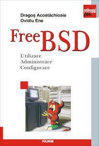
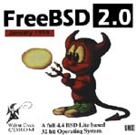
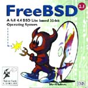
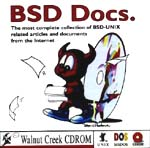
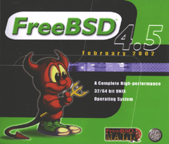
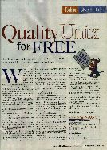

Publicaties gerelateerd aan FreeBSD
 |
Het FreeBSD Handbook bevat een aanzienlijk langere bibliografie.
Klik op een afbeelding om een grotere versie te zien.
Boeken
 |
Een publicatie van Tatsumi Hosokawa en anderen. Onder de computerboeken is het een top-seller in Japan en het overtrof de verkoop van "The Road Ahead" van Bill Gates toen het gepubliceerd werd (het was #2, dit boek was #1). |
 |
(Japans boek over FreeBSD met 2.0.5, getiteld "FreeBSD: Plezierige en eenvoudige installatie") |
 |
(Japans boek over FreeBSD met 2.0.5, getiteld "FreeBSD Introductiepakket") |
 |
Dit is "The Complete FreeBSD" van BSDi met installatiegids, handleidingpagina's en ingesloten CD's. |
 |
Dit boek werd in Taiwan (begin 1997) gepubliceerd. De titel is "FreeBSD: introductie en applicaties" en de auteur is Jian-Da Li (ook bekend als jdli). |
 |
Dit is "Aan de slag met FreeBSD" door Fuki-Shuppan. Anders dan de standaard installatiegids en Japanse omgeving legt het de nadruk op systeembeheer en low-level informatie (zoals het opstartproces). FreeBSD-2.2.2R en XFree86-3.2 op CD-ROM. 264 pagina's, 3.400 yen. |
 |
Het "Persoonlijk Unix beginpakket - FreeBSD" van ASCII. Bevat een geschiedenis van UNIX®, een gids om een Japans systeem voor documentverwerking te bouwen en om ports te creëren. 2.1.7.1R en XFree86-3.2 op CD-ROM. 384 pagina's, 3.000 yen. |
 |
BSD mit Methode, M. Schulze, B. Roehrig, M. Hoelzer en andere, C&L Computer und Literatur Verlag, 1998, 850 pagina's. 2 CD-ROMs, FreeBSD 2.2.6, NetBSD 1.2.1 en 1.3.2, OpenBSD 2.2 en 2.3. DM 98,-. |
 |
Dit is het "Installatie- en gebruikershandboek voor FreeBSD" van Mainichi Communications. Algemene introductie tot FreeBSD van installatie tot gebruik met probleemoplossing onder het toeziend oog van de gebruikersgroep in Japan. 2.2.7-RELEASE FreeBSD(98)2.2.7-Rev01 PAO en distributiebestanden op CD-ROM. 472 pagina's, 3.600 yen. |
 |
Het "Naslagwerk voor FreeBSD-gebruikers" van Mainichi Communications, onder het toezicht van het "jpman project", het handleidingvertaalproject door de gebruikersgroep in Japan. Japanse editie van sectie 1 van de FreeBSD-handleiding. 2.2.7-RELEASE FreeBSD(98)2.2.7-Rev01 en PAO op CD-ROM. 1.040 pagina's, 3.800 yen. |
 |
De "Handleiding voor FreeBSD-systeembeheerders" van Mainichi Communications, onder het toezicht van het "jpman project", het handleidingvertaalproject door de gebruikersgroep in Japan. Japanse editie van sectie 5 en 8 van de FreeBSD-handleiding. 756 pagina's, 3.300 yen. |
 |
Dit is "Over FreeBSD" van Youngjin.com. Het is het eerste FreeBSD-boek in Korea, en behandelt verschillende onderwerpen van installatie tot de Koreaanse omgeving. 3.5.1-RELEASE/PAO en 4.1-RELEASE op 3 CD-ROMs. 788 pagina's, 26.000 won. |
 |
Onno W Purbo, Dodi Maryanto, Syahrial Hubbany, Widjil Widodo: Internet-servers bouwen met FreeBSD (in het Indonesisch), uitgegeven door Elex Media Komputindo, 2000. |
 |
De 1e editie van het FreeBSD Handboek is een uitvoerige tutorial en naslagwerk over FreeBSD. Het behandelt de installatie en het alledaagse gebruik van FreeBSD en nog veel meer. April 2000, BSDi. ISBN 1-57176-241-8 |
 |
The Complete FreeBSD met CD's, 3de 3ditie, FreeBSD 4.2. Alles wat u altijd al wilde weten over hoe uw computer FreeBSD te laten draaien. Bevat 4 CD's met het besturingssysteem FreeBSD. Uitgegeven: november 2000, ISBN: 1-57176-246-9 |
 |
De 2e editie van het FreeBSD Handboek is een uitvoerige tutorial en naslagwerk. Het behandelt de installatie en het dagelijkse gebruik van FreeBSD en nog veel meer. November 2001, Wind River Systems. ISBN 1-57176-303-1 |
 |
"The FreeBSD Corporate Networker's Guide" door Ted Mittelstaedt.
Addison Wesley, 2000. Er zijn twee drukken: de eerste heeft disk 1 van FreeBSD 4.2, de tweede heeft disk 1 van FreeBSD 4.4. 400 pagina's. De Japanse vertaling werd gepubliceerd in 2001. The Networker's Guide behandelt de integratie van FreeBSD in typische bedrijfsnetwerken met speciale nadruk op de samenwerking met Windows 95/98/ME/NT/2K. Engelse versie: 2000, Addison Wesley. ISBN 0-201-70481-1 Japanse versie: 2001, Pearson Education Japan. ISBN 4-89471-464-7 |
 |
"FreeBSD, An Open-Source Operating System for Your Personal Computer",
Annelise Anderson. Een introductie tot FreeBSD voor gebruikers voor wie zowel FreeBSD als UNIX nieuw zijn. Dit boek bevat een installatie-CD-ROM voor FreeBSD 4.4 en behandelt alles dat u dient te weten over de installatie van het systeem en software van derde partijen; en over het werkend krijgen van geluid, X Window, uw netwerk en printen; het bouwen van uw eigen kernel; en upgraden. Tweede editie, december 2001, The Bit Tree Press. ISBN 0-9712045-1-9 |
 |
Absolute BSD. Dit boek bespreekt het beheer van servers die op FreeBSD zijn gebaseerd in hoog presterende bedrijfsomgevingen. Juni 2002, No Starch Press. ISBN 1-886411-74-3 |
 |
Fultus
presenteert FreeBSD Open Documentation Library. Dit is de
volledig bijgewerkte FreeBSD documentatieverzameling die in de
volgende formaten
online beschikbaar is in de sectie Technische
Literatuur van de Fultus eLibrary en de Fultus Online Book
Superstore:
Lees meer over FreeBSD eBooks en download voorbeelden op de pagina FreeBSD Documentatie van de Fultus website. |
 |
"Building an Internet Server with FreeBSD 6" is een stapsgewijze gids die nieuwe en ervaren gebruikers van FreeBSD helpt om de nieuwste Internet-serverapplicaties in een mum van tijd te configureren en te installeren. De gids bevat beschrijvingen van vele populaire en wijdverbreide open-source projecten van het Internet, gedetailleerde instructies om elk ervan te implementeren, en onderhoudstaken die belangrijk zijn voor een Internet-server. Mei 2006, Lulu Press, ISBN 1411695747, 228 pagina's. |
 |
Dit is het eerste Turkse FreeBSD-boek, geschreven door de
professionals van EnderUNIX en Huseyin Yuce. Het boek wordt
gepubliceerd door acikkod
Publicaties. Het boek is te koop via deze pagina.
Details van het boek: ISBN: 975-98990-0-0 Gepubliceerd: februari 2004 Paperback: 504 pagina's CD: FreeBSD 4.9 installatie-CD Auteurs: Hüseyin Yüce, İsmail Yenigül, Ömer Faruk Şen, Barış Şimşek en Murat Balaban. Inhoudsopgave (in het Turks) |
 |
Les cahiers de l'Admin: BSD (het schrift voor BSD-systeembeheerders) van Emmanuel Dreyfus, behandelt verschillende administratieve UNIX®-onderwerpen voor BSD-systemen. Gericht op beginners en enigszins ervaren gebruikers in BSD-systeembeheer. Boek in het Frans, Eyrolles, 2004. ISBN 2-212-11463-X |

|
Het OpenBSD PF Packet Filter Book behandelt het PF pakketfilter, ALTQ, spamd, adresvertaling en meer voor FreeBSD, NetBSD, OpenBSD, en DragonFly. Augustus 2006, Reed Media Services. ISBN 978-0-9790342-0-6. |
| FreeBSD 6 Unleashed behandelt alles wat u dient te weten om het uiterste uit FreeBSD te halen. 7 juni 2006, Sams. ISBN 0-672-32875-5 | |

|
(Traditioneel Chinees FreeBSD-boek met 6.0) December 2005, Drmaster. ISBN 9-575-27878-X |
|  | Dit boek in het Roemeens is een handige gids voor mensen die FreeBSD voor het eerst gebruiken. Het behandelt de installatie en het dagelijkse gebruik van een FreeBSD-systeem, en bevat praktische voorbeelden die het gebruik van de gereedschappen van FreeBSD illustreren. Het behandelt twee situaties over het configureren van FreeBSD als een server en als een router. 2005, Polirom Publishing House, ISBN 973-681-683-4 |
 |
The “RadioBSD Crier: 2007/01” is een artikel van 24 pagina's over het beheren van IPFW, IPFW2 en IP6FW firewalls op FreeBSD en NetBSD. |

|
The Best of FreeBSD Basics by Dru Lavigne biedt bijna 100 tutorials die een groot aantal onderwerpen met betrekking tot FreeBSD en open-source Unix behandelen. December 2007. Reed Media Services. ISBN 978-0-9790342-2-0. |
{kind=link}
CDROMs
Ga voor meer informatie over recente uitgaven naar de pagina met FreeBSD uitgave-informatie. |
Dit is BSDisc van InfoMagic, dat FreeBSD 2.0 en NetBSD 1.0 op een enkele CD bevat. Dit is het enige voorbeeld met omslagkunst. |
 |
Dit is de originele 4.4 BSD Lite2-uitgave van UC Berkeley, de kerntechnologie achter veel van FreeBSD. |
 |
De eerste van de "BSD"-series van Laser5. Bevat FreeBSD-2.0.5R, NetBSD-1.0, XFree86-3.1.1 en een FreeBSD(98)-kernel. |
 |
De tweede uit de "BSD"-serie van Laser5. Vanaf deze versie verschijnen de CD's in een standaard juwelendoos. Bevat FreeBSD-2.1R, NetBSD-1.1, XFree86-3.1.2 en 3.1.2A, en een FreeBSD(98)-kernel (2.0.5). |
 |
Dit is de Japanse Laser5-editie van de FreeBSD-CD-ROM. Het is een verzameling van 4 CD's. |
 |
Dit is de enige CD die Pacific Hitech heeft geproduceerd voordat ze hun productlijn samenvoegden met die van Walnut Creek CDROM. PHT produceert nu ook het FreeBSD/J (Japanse) CD-product. |
 |
Dit is de omslagschijf van het Koreaanse tijdschrift. Let op de creatieve omslagkunst! De CD bevat de FreeBSD 2.2.1-uitgave met wat eigen toevoegingen. |
 |
Dit is het dan - de allereerste FreeBSD-CD die gepubliceerd werd! Zowel het FreeBSD Project als Walnut Creek CDROM waren toen behoorlijk jong, en het is waarschijnlijk niet moeilijk om de verschillen in productiekwaliteit tussen toen en nu te zien. |
 |
Dit is de tweede FreeBSD-CD die gepubliceerd werd door Walnut Creek CDROM en tevens de laatste van de 1.x-tak (ref. rechtszaak USL/Novell en schikking). De volgende uitgave, FreeBSD 1.1.5, was alleen beschikbaar op het net. |
|  | Deze ongebruikelijke CD is nu een verzamelaarsitem aangezien bijna alle bestaande exemplaren systematisch opgespoord en vernietigd zijn. Een fout in de artwork zorgde voor een verkeerd jaartal op de CD, en aan de zijkant was "January" ook nog verkeerd gespeld als "Jaunary" om de schaamtefactor te verhogen. Ach, de gevaren van het inleveren van artwork enkele uren voor het vertrekken naar een beurs. |
 |
Dit is de gerepareerde versie van de FreeBSD 2.0-CD. Merk op dat zelfs het kleurschema is veranderd in de gecorrigeerde versie, iets ongebruikelijks voor een reparatie en wellicht gedaan om afstand te doen van de eerdere fout. |
 |
De FreeBSD 2.0.5-RELEASE CD. Dit was de eerste CD die het daemon-artwork van Tatsumi Hosokawa liet zien. |
|  | De FreeBSD 2.1-RELEASE CD. Dit was de eerste CD-uitgave van de 2.1-tak (de laatste was 2.1.7). |
 |
De FreeBSD 2.1.5-RELEASE CD. |
 |
De FreeBSD 2.1.6-RELEASE CD. |
 |
De Japanse versie van 2.1.6. Dit was de eerste en laatste in het Japans gelokaliseerde versie die door Walnut Creek was gepubliceerd, wat verantwoordelijk was voor het product en daarna overging naar een team geleidt door Tatsumi Hosokawa en gesponsord werd door Pacific Hitech en Laser5. |
 |
De FreeBSD 2.1.7-RELEASE CD. Tevens de laatste CD van de 2.1.x-tak die werd uitgegeven, ten eerste als een beveiligingsreparatie voor 2.1.6. |
 |
Een vroege SNAPshot-uitgave van 2.2 (gemaakt voordat 2.2.1 werd uitgegeven). |
 |
De FreeBSD 2.2.1-RELEASE CD. Dit was de eerste CD van de 2.2-tak. |
 |
De FreeBSD 2.2.2-RELEASE CD. |
 |
De FreeBSD 3.0-snapshot CD. |
|  | De archieven van de mailinglijsten en nieuwsgroepen van FreeBSD, omgezet in HTML en min of meer geïndexeerd op discussie. Dit product liep 2 uitgaven en stopte toen plots wanneer het duidelijk werd dat er gewoon te veel gegevens waren om op één CD te zetten. Misschien als DVD's populairder worden... |
 |
FreeBSD Toolkit: Verzameling van zes schijven met middelen om uw FreeBSD-ervaring te verbeteren. |
 |
FreeBSD Alpha 4.2 - De volledige versie van het DEC Alpha 64-bit UNIX-besturingssysteem. |
 |
FreeBSD 4.2: De volledige versie van het PC 32-bit UNIX-besturingssysteem. |
 |
FreeBSD 4.2 CD-ROM. Lehmanns CD-ROM Editie. Januari 2001, 4 CD-ROMs. Lehmanns Fachbuchhandlung, Duitsland. ISBN 3-931253-72-4. |
 |
FreeBSD 4.3-RELEASE CD-ROM. April 2001, Wind River Systems. ISBN 1-57176-300-7. |
 |
FreeBSD Toolkit: Verzameling van zes schijven met middelen om uw FreeBSD-ervaring te verbeteren. Juni 2001, Wind River Systems. ISBN 1-57176-301-5. |
 |
FreeBSD 4.4 CD-ROM. Lehmanns CD-ROM Editie. November 2001, 6 CD-ROMs in juwelendoos. Lehmanns Fachbuchhandlung. Duitsland. ISBN 3-931253-84-8. |
 |
FreeBSD 4.4-RELEASE CD-ROM. Wind River Systems. September 2001. ISBN 1-57176-304-X. |
|  | FreeBSD 4.5-RELEASE CD-ROM. Februari 2002, FreeBSD Mall Inc. ISBN 1-57176-306-6. |
{kind=link}
{kind=link}
{kind=link}
Tijdschriften
 |
Omslag van een Koreaans UNIX-tijdschrift, uitgave uit mei 1997. Bevatte ook FreeBSD 2.2.1 met omslag-CDs. |
 |
Uitgave van UNIX User Magazine uit november 1996. Bevatte ook FreeBSD 2.1.5 op omslag-CD. |
 |
Dit is de special "FreeBSD Full Course" in Software Design uit april 1997 (gepubliceerd door Gijutsu Hyoron Sha). Er zijn 80 pagina's aan FreeBSD-artikelen die alles behandelen van installatie tot het volgen van -CURRENT. |
|  | Quality Unix for FREE, door Brett Glass in Sm@rt Reseller Online September 1998 |
 |
Dit is het "BSD magazine" gepubliceerd door ASCII corporation, 's werelds eerste publicatie gespecialiseerd in BSD. BSD magazine behandelt FreeBSD, NetBSD, OpenBSD en BSD/OS. De eerste uitgave bevat artikelen over de geschiedenis van BSD, installatie en ports/pakketten; het bevat ook 4 CD-ROMs met FreeBSD 3.2-RELEASE, NetBSD 1.4.1 en OpenBSD 2.5. |
{kind=link}